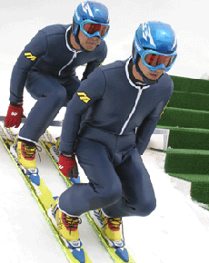

|
SKI JUMPING PAIRS - ROAD TO TORINO 2006
Mashima Riichiro & Kobayashi Masaki | Japan 2005 | 82 Min.
Format: DigiBeta
Material: DV
Originalsprache: Japanisch
Drehbuch: Riichiro Mashima, Masaki Kobayashi
Kamera: Makoto Yoshida
Schnitt: Masaki Kobayashi
Ton: Shingo Takahasi
Musik: Dan Miyagawa
Mit Shosuke Tanihara, Issei Masamune, Kazuyoshi Funaki, Tomoyuki Mashiko
Produktion: TV Man Union, Inc., Kama Hideki, Kawamura Genki
Special Award Tokyo International Film Festival 2005
Die Geschichte des langen Weges der Sportart Paar-Skispringen bis hin zur Anerkennung als olympische Disziplin. Eigenartige Wissenschaftler und Fachleute berichten von den dramatischen Ereignissen bis hin zur Winterolympiade in Turin 2006. Aufbereitet wie ein educational movie und durchsetzt mit scheinbar seriösen Interviews und Elementen japanischer Werbefilme, erzählt die fake documentary auch von Aufstieg und Fall der beiden Protagonisten dieses aberwitzigen Sports. Von ihrem Vater, dem „Erfinder“ des Paar-Skispringens, zum Erfolg gezwungen, werden sie letztlich Opfer ihrer eigenen Popularität und des ausufernden Kommerzes.
Riichiro Mashima, geb. 1972, studierte Industriedesign an der Chiba Universität. Nachdem er drei Jahre als Geschäftsmann gearbeitet hatte, lernte er 3D CG Design auf der „Digital Hollywood School“ in Tokio. Sein Abschlussprojekt SKI JUMPING LARGE HILL PAIRS (2002) wurde international vielfach ausgezeichnet.
Masaki Kobayashi, geb. 1966. Nach seinem Studium arbeitete er bei der Produktionsfirma TV Man Union, Inc. Seitdem hat er über 80 Dokumentarfilme, Dramen und Promotion-Videos gedreht.
zurück
|